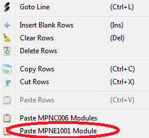

Il configuratore dei moduli remoti è uno strumento grafico utile a definire la configurazione del sistema di automazione e, definito il modello di PLC o Pannello Operatore Mect, permette la configurazione dei nodi remoti “MPNE” e delle loro variabili utili all’applicazione.
L' editor grafico dei nodi remoti MPNE è visibile solo se nel progetto è stato inserito almeno un modulo della famiglia MPNE.
Per inserire un modulo occorre premere il tasto destro del mouse in una riga della Crosstable e selezionare la voce “Paste MPNE1001 Module”.

Nella seguente finestra è possibile impostare l'indirizzo del nodo in uso. Se lo strumento Mect ha più porte RTU disponibili, il sistema permette di associare la porta al nodo. Queste impostazioni possono essere modificate anche a posteriori nell'editor grafico.

L’interfaccia si presenta nel seguente modo:

Nel campo “Model” appare il codice del PLC o Pannello Operatore Mect.
Nel campo “MPNE10” è possibile selezionare il nodo da utilizzare per la configurazione del sistema. La scelta sarà multipla qualora allo stesso PLC o Pannello Operatore Mect vengano abbinati diversi nodi remoti.
Il campo “Port” è abilitato quando il modello di PLC o Pannello Operatore Mect ha più di una porta seriale 485 e permette la scelta della porta con cui collegare il nodo remoto.
Il campo “Node Id” è l’indirizzo del nodo remoto e può essere definito dall’utente.
Il pulsante quadrato  permette di rinominare la variabili associate ai moduli modificando il prefisso “MPNE_” assegnato di default dal sistema e uguale per tutti i moduli.
permette di rinominare la variabili associate ai moduli modificando il prefisso “MPNE_” assegnato di default dal sistema e uguale per tutti i moduli.
Il campo “Exp1” si definisce la configurazione del modulo di espansione n°1 tra: “no Module, 8 Digital Input, 8 Digital Output, 2 AI – 1 AO”.
Il campo “Exp2” si definisce la configurazione del modulo di espansione n°2 tra: “no Module, 8 Digital Input, 8 Digital Output, 2 AI – 1 AO”.
Nota bene: nell’editor grafico, i moduli Output con 4 o 8 Relè del modulo MPNE non sono contemplati nelle scelte poiché sono equivalenti all'espansione “8 Digital Output”.
Il pulsante three-state  permette di filtrare le variabili nell’elenco ed è composto di tre parti: una grigio scuro, una grigio chiaro e una azzurra.
A seconda dello stato vengono visualizzate variabili diverse:
permette di filtrare le variabili nell’elenco ed è composto di tre parti: una grigio scuro, una grigio chiaro e una azzurra.
A seconda dello stato vengono visualizzate variabili diverse:
 Il pulsante solo con il grigio scuro attivato visualizza le variabili SOLO della base.
Il pulsante solo con il grigio scuro attivato visualizza le variabili SOLO della base.
 Il pulsante con il grigio scuro e il grigio chiaro attivati visualizza della base e quelle delle espansioni in uso nel sistema.
Il pulsante con il grigio scuro e il grigio chiaro attivati visualizza della base e quelle delle espansioni in uso nel sistema.
 Il pulsante con il grigio scuro, il grigio chiaro e l’azzurro attivati visualizza le variabili della base, quelle delle espansioni in uso
nel sistema e le variabili non ancora associate a nessuna espansione, ma che potrebbero essere utilizzate nel sistema.
Il pulsante con il grigio scuro, il grigio chiaro e l’azzurro attivati visualizza le variabili della base, quelle delle espansioni in uso
nel sistema e le variabili non ancora associate a nessuna espansione, ma che potrebbero essere utilizzate nel sistema.
All’inserimento di un nuovo modulo, le variabili dei moduli inseriti vengono attivate in automatico e visualizzate nella tabella sottostante.
Per visualizzare le variabili associate agli altri moduli è necessario utilizzare il pulsante three-state  .
.
Cliccando su uno dei moduli inseriti nel sistema, nella tabella vengono visualizzate solo le variabili del modulo selezionato.
La tabella è in modalità READ-ONLY. Cliccando sulla variabile desiderata si accede direttamente alla Crosstable Editor dove è possibile modificare i dati.